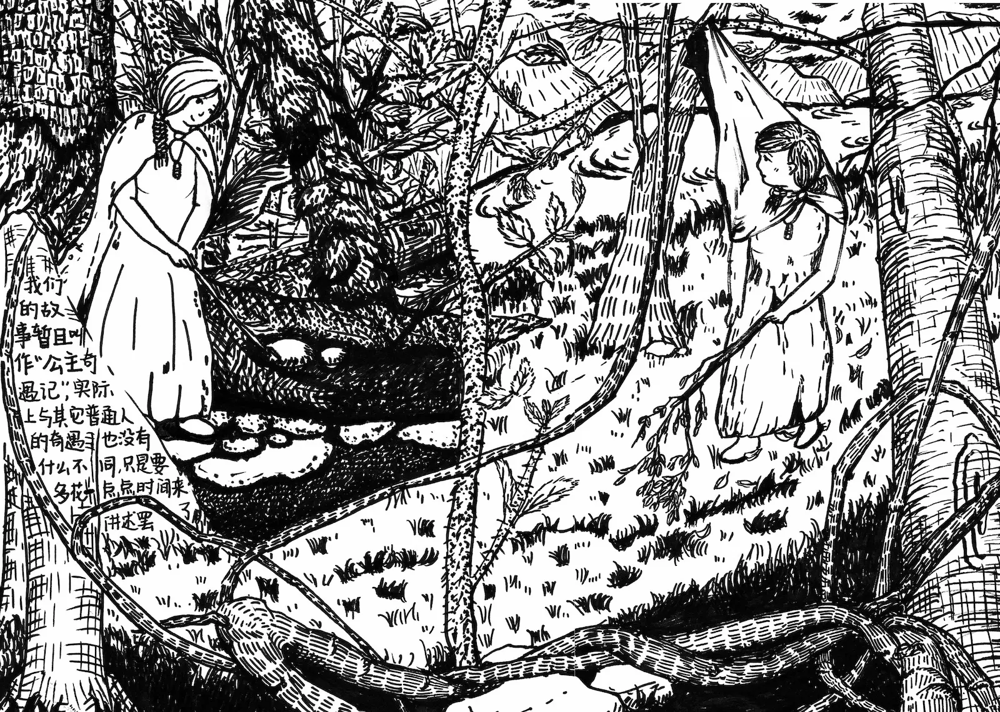
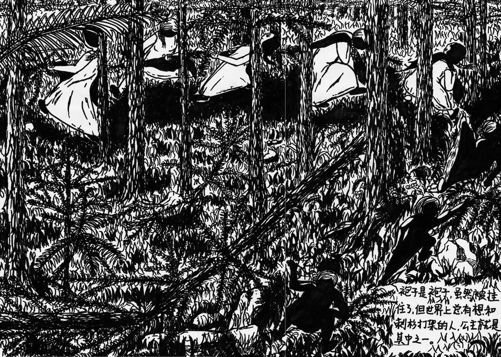
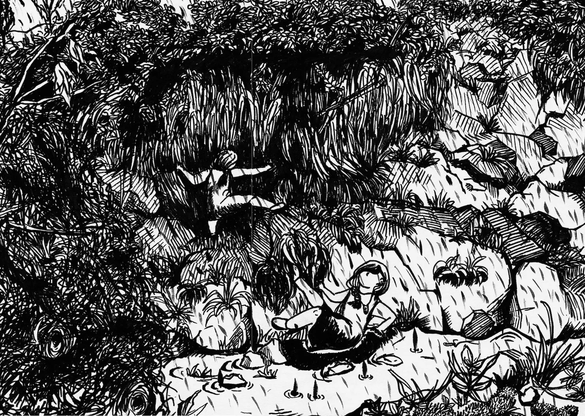
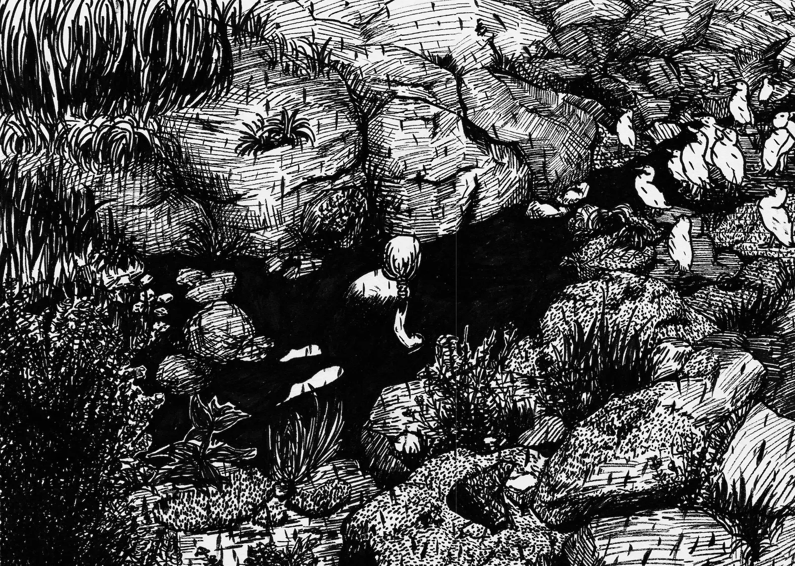
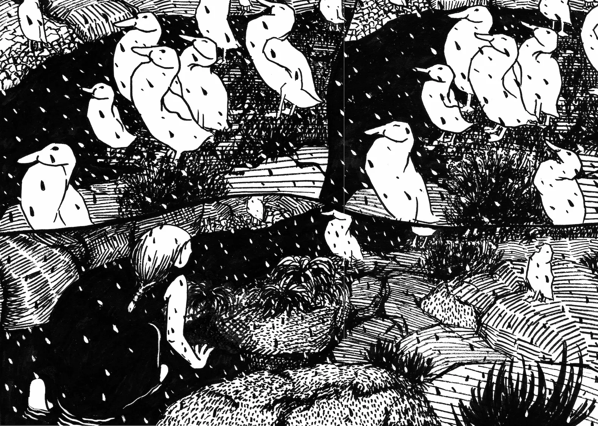
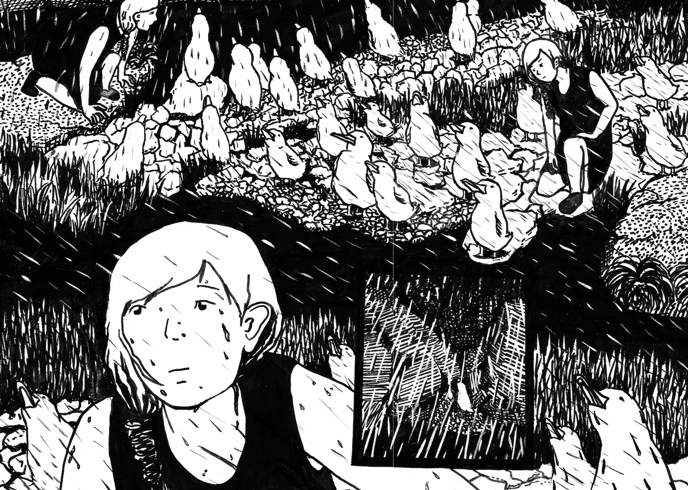

公主奇遇记
The Princess' Adventure
这是我在2025年创作的插画，源于洗澡时的灵光一闪。这里只画出了一部分，名为《鸭子听雷》，公主在雨中跌跌撞撞，落魄间遇见了一群鸭子。






“鸭子听雷”是在描述鸭子和鹅会出现的一种自然反应，当它们遭遇雷雨时会集体抬头朝向雨的方向一动不动，仿佛站在雨中听雷声。其实是它们的羽毛上有一层油脂，朝向雨的方向能让雨水最快从身上滑过，一动不动是为了减少热量消耗。现在“鸭子听雷”变成一句俗语，人听不懂另一个人说话就像是鸭子听不懂雷声。